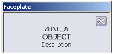

Zone-to-Zone data communication
After Inter-Zone Servers and Control Networks are installed and configuration (including Remote Zone Areas) is completed in each of the connected DeltaV systems, you can read and write information (with some restrictions) between DeltaV systems. The syntax necessary for communication varies with the DeltaV application and the type of data being communicated.
- Module and block parameters
- Diagnostic parameters
- I/O parameters (classic, CHARMs, wireless, and remote)
Module and block parameters, diagnostic parameters, and classic I/O parameters each have a syntax you can use to directly reference from another zone as shown below.
CHARMs I/O, wireless I/O, and remote I/O cannot be referenced directly from another zone. Instead, you must configure a function block (AI, AO, DI, DO, PID, DC, and so on) with an I/O Reference to the CHARM, wireless, or remote I/O. Then that block's output can be referenced across zones like any other module parameter (or wired into an algorithm and then a downstream parameter can be referenced).
Browsing to data in other DeltaV systems is not supported. You must enter the path to the parameter in the other system.
Control Studio and DeltaV Explorer
When DeltaV Zones is enabled you can include data from other DeltaV systems as external or dynamic references if the remote areas are shared with the local DeltaV system. Inter-Zone write references are not supported. Disallowing Inter-Zone module-to-module writes ensures that those responsible for a system's configuration oversee Inter-Zone data (and volume of data) coming into the system. As a result, the configuration must include adequate logic to ensure the appropriate action when Inter-Zone reads fail. The syntax required to reference parameters depends on whether you are referencing them from an expression or a user-defined parameter.
Addressing in an expression
- Module and block parameters:
//<zone name>%<module>/[<block>/]<parameter>.<field>
- Diagnostic parameters:
//<zone name>%<node>/<subsystem>/<parameter>.<field>
- Classic I/O parameters://<zone name>%<controller>/IO1/<card>/<channel>/<parameter>.<field>Note:
Expression references to device signal tags (DSTs) in other systems are not allowed. You must use the physical address (also known as the I/O path) as shown.
For example, a reference from an expression to a block parameter of a module in another DeltaV system looks like:
//ZONE_B%AI_MOD/AI1/OUT.CV
The .CV field is the default and you do not need to include it. When using a reference field other than the .CV field, you must include the field name.
Addressing in user-defined parameters
Addressing in user-defined parameters is similar to addressing in expressions:
- <zone name>%<module>/<block>/<parameter>
- <zone name>%<node>/<subsystem>/<parameter>
- <zone name>%<controller>/IO1/<card>/<channel>/<parameter>
For example, a user-defined parameter reference to a parameter in another DeltaV system looks like:
ZONE_B%AI_MOD/AI1/OUT
The leading slashes (//) are not required and are stripped out if you include them. Fields are not allowed in external reference parameters. If you include a field an error appears when you close the parameter.
If you create references to parameters in the local system that include the local zone name, the local zone name is removed when you save the parameter or expression.
Dynamic reference parameters between DeltaV systems work as expected with two exceptions:
- You cannot include the zone prefix in a dynamic reference in the local system.
- A dynamic reference between systems stops working if you change the zone name of the system you are referencing.
Paths that do not include zone names are interpreted as referring to a parameter in the DeltaV system where the module is defined.
DeltaV Operate
The impact of DeltaV Zones on Display configuration and management includes the following:
- Display configuration for multiple systems
- Writing parameters between DeltaV systems
- Alarm and event services and appearance in alarm banner and alarm list
- Zone name appearing in faceplates and detail displays
You can configure displays in a DeltaV Zones environment so users can access information in other DeltaV systems. This is accomplished by including the zone name in datalink parameter paths. References to parameters in the local DeltaV system (the system in which the display is viewed) do not need to include the zone name. Example parameter paths in displays:
- DVSYS.<zone name>%<module>/<block>/<parameter>.F_<field>
- DVSYS.<zone name>%<node>/<subsystem>/<parameter>.F_<field>
- DVSYS.<zone name>%<DSTname>/<parameter>.F_<field>
You can also use DVSYS.<zone name>%<controller>/IO1/<card>/<channel>/<parameter>.F_<field>
Both A_ and F_ fields are valid.
For example, a datalink configured to access a parameter from a DeltaV system whose zone name is ZONE_B looks like:
DVSYS.ZONE_B%AI_MOD/PID1/SP.F_CV
Tag substitutions for faceplate and detail displays cause paths to change from
DVSYS.@MOD@/<block>/<parameter>.A_<field>
to
DVSYS.<zone name>%<module>/<block>/<parameter>.A_<field>
Writing parameters between Zones
Writing parameters between DeltaV systems from workstations is supported. This is the method used for all operator initiated parameter changes (changing mode or setpoint, acknowledging alarms, and so on) and other client applications (OPC data servers, Excel spreadsheets, and so on). For a user to be able to write to a parameter in another zone from DeltaV Operate the following conditions must be met:
- The remote zone area the parameter is in must be shared with read and write access with the local area.
- The remote area must be included in the local zone's Remote Zone Areas folder for the remote zone
- The datalink in the display must include the remote zone name.
- The user attempting the write must have the correct security key for the remote zone area.
The Inter-Zone Server in the target DeltaV system blocks write access attempts of all types if the parameter resolves to be in a module or node in a plant area that has not been configured to have read and write access from the DeltaV system attempting to write the parameter.
Writes between DeltaV systems may fail for any of several reasons. The status returned to the application attempting to write the parameter can be useful when diagnosing the cause of the failure (communications, configuration in either DeltaV system, or other reasons).
SIS Secure writes between DeltaV systems are not supported. They can be configured, but fail with an error in run mode.
Considerations when using Named Set parameters
The behavior of reads and writes of named set parameters between DeltaV systems depends on how well the named set on the local system matches the named set on the other system. The following table summarizes the behavior.
|
ZONE_A and ZONE_B Named Set configuration |
Read and write behavior between systems |
|---|---|
|
Named sets are identical in both systems |
Can read and write parameters in both directions without problems. The remote named set input parameter will change and reflect the state selected on the local display and vise-versa. |
|
Some named set names differ between systems |
The writes between systems work on states with identical names, but fail (in either direction) on the states that are unique in either system. |
|
Some named set values differ between systems |
The writes between systems work on states with identical values, but fail (in either direction) on the states that are unique in either system. |
|
Local system does not have named set configured |
Can read named set parameters from the remote system, but cannot write to remote system named set parameters because the named set is not defined in the local system. An error message appears but no other problems result. |
If your configuration requires writing named set parameters across zones, ensure that named set definitions are identical in all zones.
Modifying pictures for use in a Zones environment
If you are implementing zones in an existing plant so that you can communicate between DeltaV systems, you can use the DeltaV Picture Upgrade Expert to modify displays from one DeltaV system to use in another system. The expert adds the zone name specified to all parameter references in a display that do not already specify a zone name. Thus, displays configured for one DeltaV system can be easily modified for use in another DeltaV system to display information from the original system. Any user-defined variables and color threshold tables that support your displays must also be available on the local DeltaV system.
When a faceplate or detail display opens for a module in a remote zone, the zone name appears above the module or function block tag name.

Process History View: viewing historical and real-time parameter data in a DeltaV Zones environment
You cannot assign areas from remote zones to the Continuous Historian subsystem on a workstation. Each DeltaV system defines and administers its Continuous Historian subsystem and historical data collection policy. You can create charts in Process History View that display information from other DeltaV systems (zones). Inter-Zone historical data can be managed in one of the following ways:
- Run the Process History View application on a Remote Desktop Services node in the other zone.
- Connect the Process History View application to historical data servers in other zones, using plant network connections and client/server communications. These connections do not use the Inter-Zone Control Network.
- Read a limited number of parameters from the other zone into module parameters in this zone, and record historical data on these parameters.
In Process History View you specify the historical data server. This server is used for historical data on all charts that are configured to use defaulthost as the historical data server. You can configure each chart to get its data from a different historical data server node. Historical data servers from other zones are accessed from the Process History View node over the plant network. A historical data server in another zone does not appear in the Historical Data Server field of the Set Default Data Servers dialog in Process History View. You must explicitly enter the node name where the DeltaV Continuous Historian, the Advanced Continuous Historian, or OSIsoft PI Server is installed and running.
The real-time history server is always the OPC data server on the workstation running Process History View.
In a DeltaV Zones environment, specify a parameter in the Parameter Reference Entry dialog in the general form:
<zone name>%<module>/<block>/<parameter>.<field>
To access a DST parameter you must use the hardware address (I/O path):
<zone name>%<controller>/IO1/<card>/<channel>/<parameter>.<field>
To see historical data, the parameter must be in the collection list of the historical data server specified in the chart configuration.
To see real-time data, the parameter must exist in the zone specified.
Because a faceplate does not know which historian is collecting data for a chart opened from the faceplate in a DeltaV Zones environment, the historical data server referenced by defaulthost must be set to the correct historical data server for the module being viewed. Otherwise, only real-time data appears in charts opened from faceplates in a DeltaV Zones environment. For example, if Process History View is opened in DeltaV Operate in ZONE_A from a faceplate that is displaying the module MOD_1 in ZONE_B, only real-time data appears on the chart unless defaulthost is set to the historical data server collecting historical data for MOD_1 in ZONE_B.
Diagnostics
You cannot run DeltaV Diagnostics from an Inter-Zone Server (IZS). When Diagnostics is running on another workstation type, select the Inter-Zone Server in the hierarchy and right-click to view diagnostic parameters.
From the Redundancy subsystem of an IZS you can perform a redundancy switchover.
From the Communications subsystem of an IZS you can check the Inter-Zone Control Network integrity. You can also display the Communications Connection List for the IZS by selecting Display Com Connection List from the Communications subsystem context menu.
The Zones subsystem and the configured zones have diagnostic parameters.
DeltaV Diagnostics does not check for time differences between zones. If it is important to your implementation that the time between different zones be synchronized you must address this in your installation. One way to do this is to include a Network Time Server in each DeltaV system.